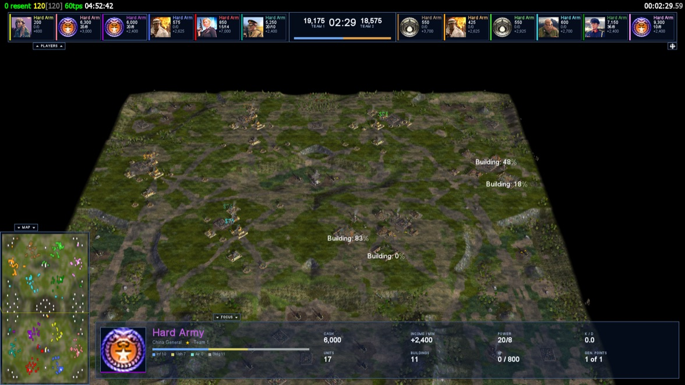
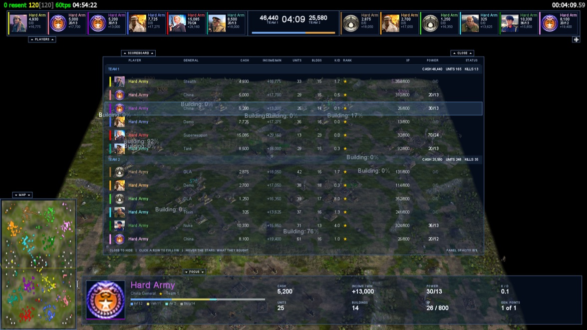
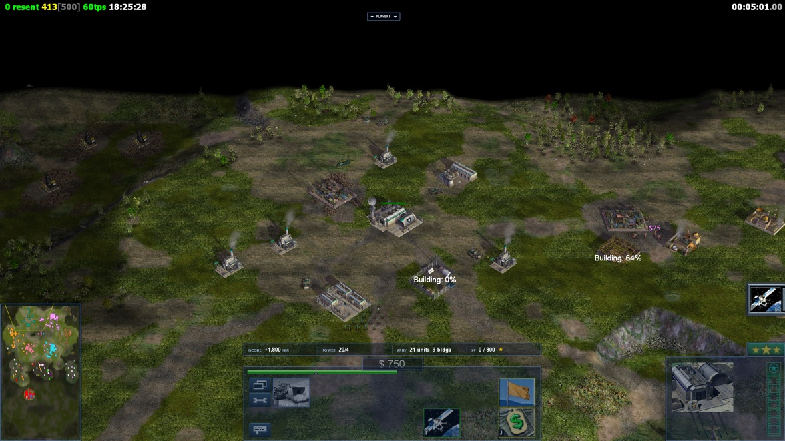

The readouts drawn over the battlefield. Applied the next time the game starts.
Show legacy
Show GeneralsX UI
Readouts
Size of all
14
Performance
Frame rate
12
Ping / latency
14
Match
Match timer
18
System clock
12
Show income per minute
Players
Player listReplays and observers
13
Messages & chat
In-game messagesCustom size — off uses the game’s own size. The text cannot be hidden here
15
In-game chat fadeSeconds a chat or system message stays on screen
10
Spectator
Reset
OpacityHow see-through the panels are, spectating and playing. 25 is nearly clear, 100 is solid.
50
%
What shows
Portraits
Names
Cash
Income
Power
XP
Units and buildings
Clock and totals
Event toast
Follow panel
Minimap
Status and time
Tab scoreboard
Hide dead players
Shown to spectators, replay viewers and defeated players, and to you while you play (While playing, on the right). Applied the next time the game starts. The keys are on the Keybinds page.
Hide keys
Hide the game HUDThe command bar, build cameos, money, minimap and radar
F10
Hide the spectator HUDOnly the readouts above. Independent, so you can hide either alone
F11
Layout
FullscreenReset
38ms59[60]60tps14:32:05
Unit under attack
Upgrade Complete: AP Bullets
User-PC has been Defeated
00:12:45.17
REPLAYS AND OBSERVERS ONLY
BiG SiZe completed MOAB
[OoE]Marakar completed Nuclear Tanks
[OoE]ExCaL^ completed Anthrax Beta
(T) Player
Army
Cash
Cash/m
(R) XP
SP
K/D
Power
(1) BiG SiZe
USA
4,210
+820
(3) 5140
2
4.7
ON (35)
(2) [OoE]Marakar
Nuke
3,880
+640
(2) 3020
1
1.3
OFF
(2) [OoE]ExCaL^
Toxin
2,105
+410
(1) 1180
0
0.3
-
Approximate. Each readout is scaled against its own default and drawn with this launcher’s fonts, not the game’s, so read it as direction and rough size rather than exact pixels. In-game messages are scaled from the size this screen turns them on at, because the game’s own message size lives inside its archives.
Across
14
Down
12
Screen pixels from the top-left corner, for the ping and frame rate row only — saved to GXHud.ini, the file the engine reads for this anchor. The match timer is anchored right, the player list bottom-centre, and the intelligence feed 32% down the left. Each keeps its own anchor.
Layout
Players bar
Tab scoreboard
Playing



A real match, cut from game screenshots.The picture is a screenshot from the game, so the switches and the opacity do not redraw it; they apply in the game. Hold Tab for the scoreboard.
While playing
Reset
Numbers on the command barYour income, power, units, buildings and rank progress.
Tab opens the scoreboardHold Tab for the scoreboard. Off keeps Tab as Diplomacy.
While playing you see only what the game already shows a player: your own numbers in full, everyone else by name, general and team.